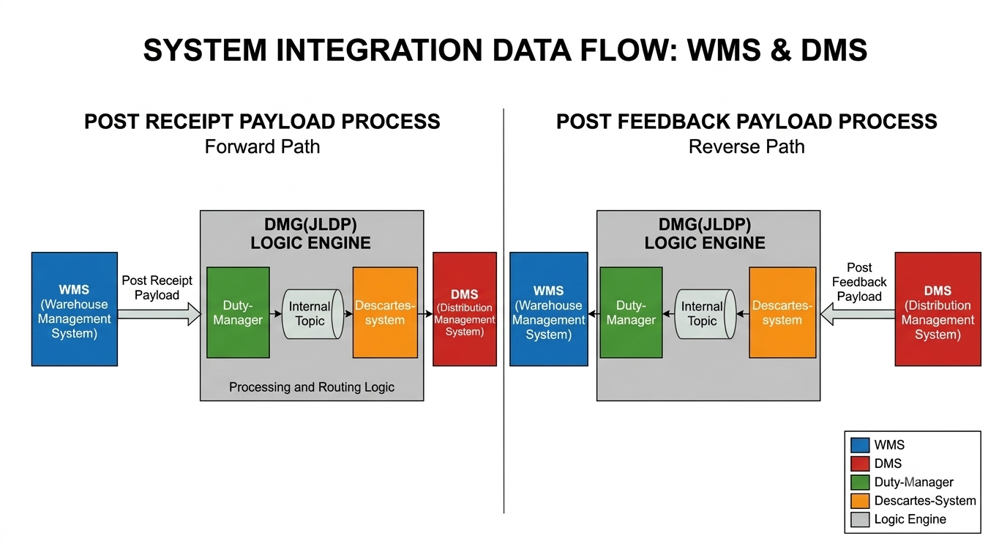

Hello, I am
Swathi K S
|
Salesforce Tester with AI assisted Testing
Customized "Gemini Gems" for Salesforce and API Testing
Experienced AI-driven Quality Engineering
About Me
I am a QA Automation Engineer based in Bengaluru, Karnataka, India, with 2+ years of experience at Cognizant in software testing and quality engineering. My expertise includes Playwright with TypeScript and JavaScript, Selenium with Java, and REST API automation. I have built Playwright automation frameworks from scratch using the Page Object Model (POM), automated end-to-end business workflows, and integrated test execution with GitLab CI/CD and GitHub Actions. I also leverage AI tools to support test case generation, coding, test analysis, and repetitive QA tasks. I am passionate about continuous learning, solving complex testing challenges, and building reliable, maintainable automation solutions as I grow in my journey toward becoming an SDET.
- Core Expertise: Playwright Automation, API Testing, Framework Design, and End-to-End Testing.
- Built two Playwright automation frameworks from scratch for enterprise UI, API, and integration workflows.
- Integrated automated test execution with GitLab CI/CD and GitHub Actions, with Allure reporting for improved test visibility and debugging.
- Experienced in Salesforce Lightning testing, WMS-DMS integration testing, and validating API payloads and business workflows.
- Exploring AI-assisted Quality Engineering using tools such as GitHub Copilot, Gemini Gems, and other AI assistants to improve productivity and testing efficiency.
0
Years Experience
0
+Automated Test Cases
0
Framework Built
Technical Expertise
Professional Experience
Programmer Analyst – SEG
Cognizant Technology Solutions
Oct 2024 – Present | Bengaluru, India
Working on enterprise application quality engineering across UI automation, REST API testing, system integrations, and end-to-end business workflows. Collaborated with development and business teams to support reliable software delivery.
- Integrated automated test execution into GitLab CI/CD and GitHub Actions.
- Combined UI, API, and integration validation to verify end-to-end business workflows.
- Used AI-assisted tools to support testing productivity, code assistance, and analysis of Jira user stories.
Project Intern
Bharat Electronics Limited (BEL)
Apr 2024 – May 2024 | Bengaluru, India
Developed the front-end of a test software application using C#, designing intuitive interfaces for test data input, visualization, and reporting. Collaborated with the backend team to connect UI components with application logic and improve software usability.
- Designed and implemented user interfaces for test software.
- Integrated test data input, visualization, and reporting functionality.
- Collaborated with the backend team to support application integration.
Full Stack Developer Intern
DijiSuji Technologies Pvt. Ltd.
Nov 2023 – Dec 2023 | Bengaluru, India
Gained hands-on experience in HTML, CSS, JavaScript, and Flask through practical web development projects. Built a personal portfolio website, a Maths Game, and an Astrophile website, strengthening front-end development and problem-solving skills.
- Developed responsive web pages using HTML and CSS.
- Implemented interactive features using JavaScript.
- Explored backend web development using Flask.
- Built portfolio, Maths Game, and Astrophile website projects.
Information Science and Engineering Student
PES College of Engineering Mandya
Jul 2022 – Jul 2024 | Mandya, Karnataka
Completed a Bachelor of Engineering in Information Science and Engineering with a CGPA of 8.4. Actively participated in technical communities and innovation initiatives through Hack Club and the Institution's Innovation Council (IIC).
- Participated in technical events, hackathons, and workshops.
- Contributed as an IIC Coordinator, supporting event planning and coordination.
- Collaborated with students and faculty to promote innovation and technology initiatives.
- Developed teamwork, leadership, communication, and problem-solving skills.
Oracle Integration – Enterprise Application Testing
Executed integration testing across Oracle and downstream applications, validating API responses, data mappings, and end-to-end business processes.
Featured Projects

Sales Enablement – Enterprise Salesforce Automation
Built a Playwright automation framework from scratch using Page Object Model (POM), reusable page objects, utilities, and custom assertions.

Hela – WMS to DMS Integration Automation
Designed and developed a Playwright automation framework from scratch using TypeScript, POM architecture, and reusable utilities.
Insights & Articles
Get In Touch
I'm currently looking for new opportunities as an SDET. Whether you have a question or just want to say hi, I'll try my best to get back to you!